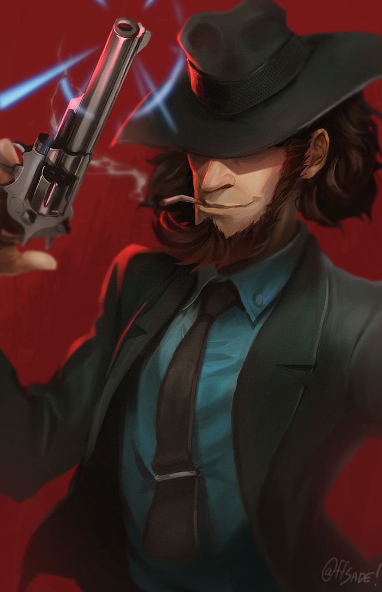

|  | BIOGRAFIA |
|---|---|
|
Daisuke Jigen é o parceiro mais fiel de Arsène Lupin III e um dos melhores atiradores do mundo.
Antes de se tornar ladrão ao lado de Lupin, Jigen teve uma vida marcada por trabalhos perigosos,
traições e missões como mercenário. Cínico, desconfiado e sempre com um cigarro na boca,
ele esconde um coração leal e um senso de honra próprio. Apesar da aparência de durão,
Jigen considera Lupin seu único amigo verdadeiro e o segue em qualquer aventura, desde que envolva tiros,
caos e dinheiro. | |
| ARMAS | |
|
Magnum S&W Model 19: Sua arma icônica. Conhecida por ser extremamente precisa em suas mãos capaz de acertar alvos impossíveis. Granadas: Usa ocasionalmente para situações específicas. Nada extravagante, apenas útil e confiável. | |
| Habilidades | |
|
Mira Perfeita: Consegue acertar alvos minúsculos a grandes distâncias sem esforço. Saque mais rápido que o normal: Saca e dispara mais veloz do que um olho humano acompanha. Instinto de Sobrevivência: Lê situações perigosas rapidamente e encontra a forma mais segura de escapar. |